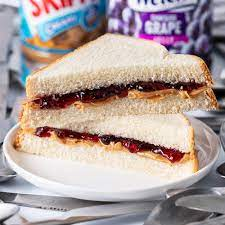

Peanut Butter Jelly Sandwich

Description
This recipe requires intense focus and concentration and takes a lot of time to perfect. In order to carry this out, you must have an intricate understanding of all the ingredients used and the processes in which this final dish is made.
Ingredients
- Two pieces of bread
- One jar of smooth/crunchy peanut butter
- One jar of strawberry jam
Steps
- Place both pieces of bread facing up
- Carefully apply peanut butter on one side of one of the pieces of bread
- Repeat Step 2 with jam for the other piece of bread
- Precisely join both breads till they are perfectly together
- Eat.